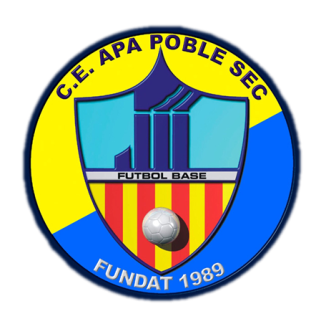
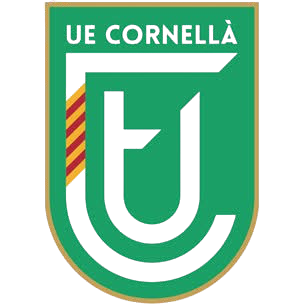
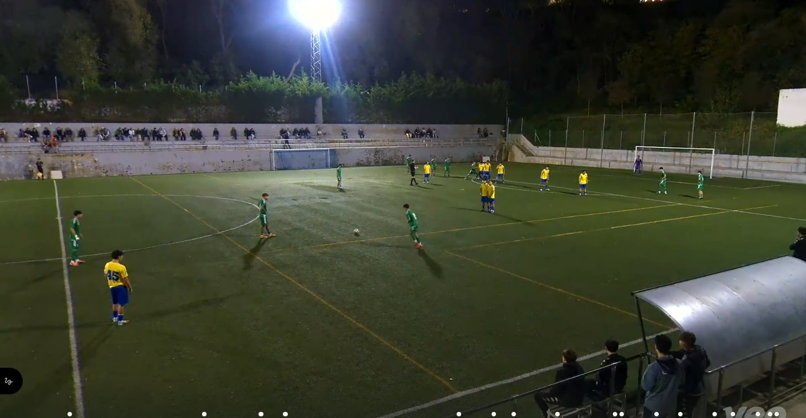
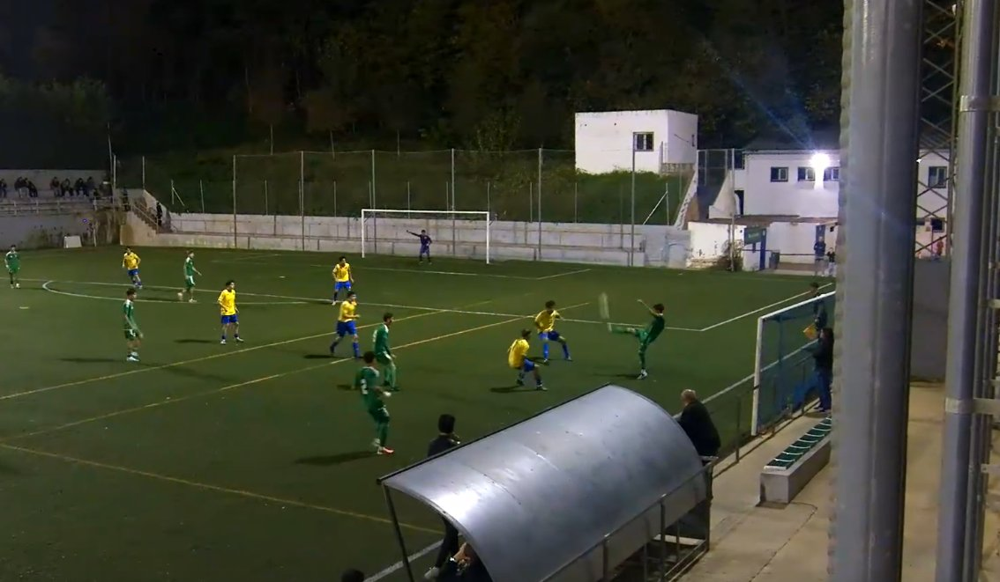
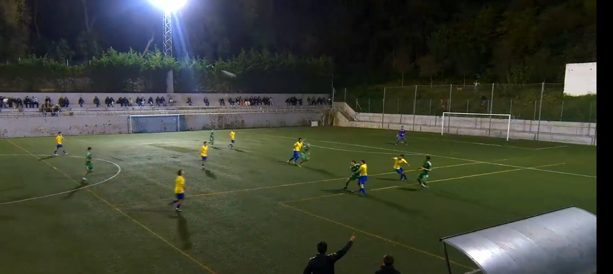

vs
INFORME DEL PORTERO
Juvenil A · APA Poble Sec vs UE Cornellà · 21/11/2026
Contexto y valoración global
2 – 3
VALORACIÓN GLOBAL: POSITIVA
Positivo
- Buena posición de partida
- 1 vs 1 sin error grave
A mejorar
- Posición retrasada en algunas situaciones
- Calma y control con los pies
- Seguridad en los córners
Goles encajados
-
1
1 vs 1
Episodio no gestionado del todo, pero sin error grave. Más sugerencia que error: posición respecto al rival y aguantar de pie.
-
2
Penalti
[Descripción de la situación]
-
3
Acción de juego
[Descripción de la situación]
Gol 1 · 1 vs 1 SUGERENCIA
- Buscar la posición correcta respecto al rival
- Mantenerse de pie y esperar el movimiento del rival
- No anticipar, salvo estar muy seguro
Defensa del espacio · Posición A MEJORAR




Defensa del espacio · Posición BIEN


- Buena posición de partida: es la referencia a repetir
Juego con los pies A MEJORAR
Córner en contra A MEJORAR
- Rechace corto
- Poca seguridad en la intervención
Lecciones aprendidas
-
1
1 vs 1
De pie y esperar el movimiento del rival. No anticipar si no estás muy seguro.
-
2
Posición
La posición se ajusta a cada situación, también en los saques de banda. La buena posición de partida es la referencia.
-
3
Juego con los pies
Primero calma y control. Muchas veces hay una opción lateral.
-
4
Córners
Intervención segura: el rechace corto deja el balón al rival.